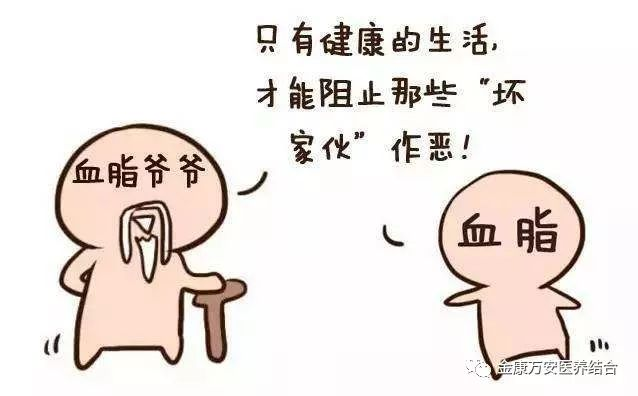
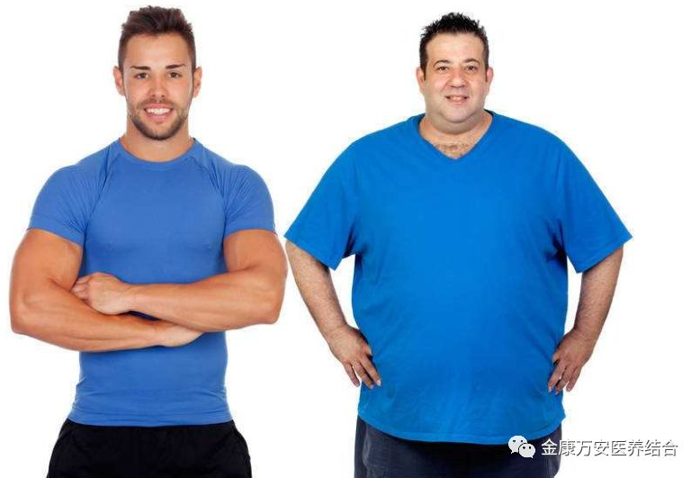
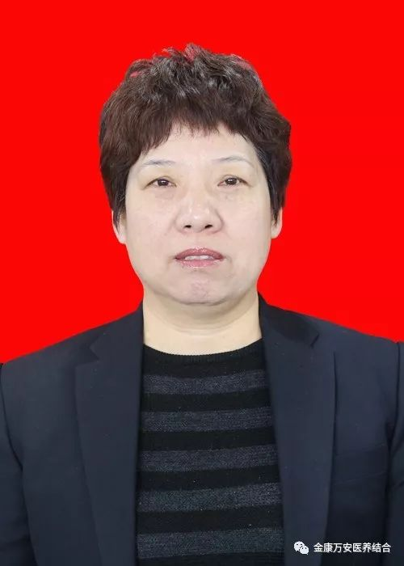
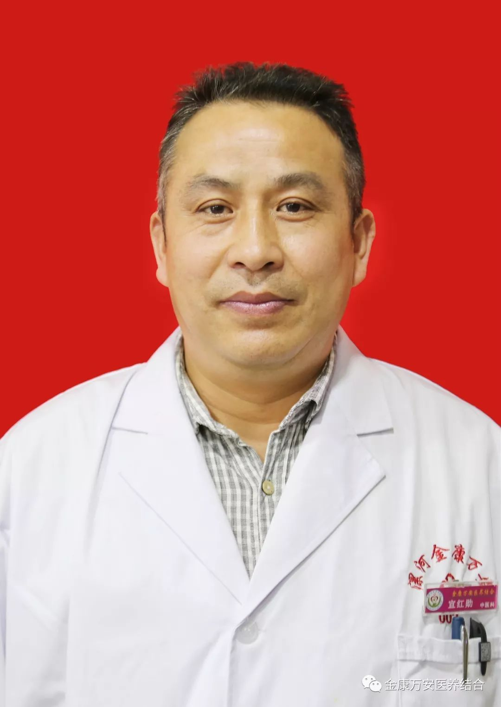
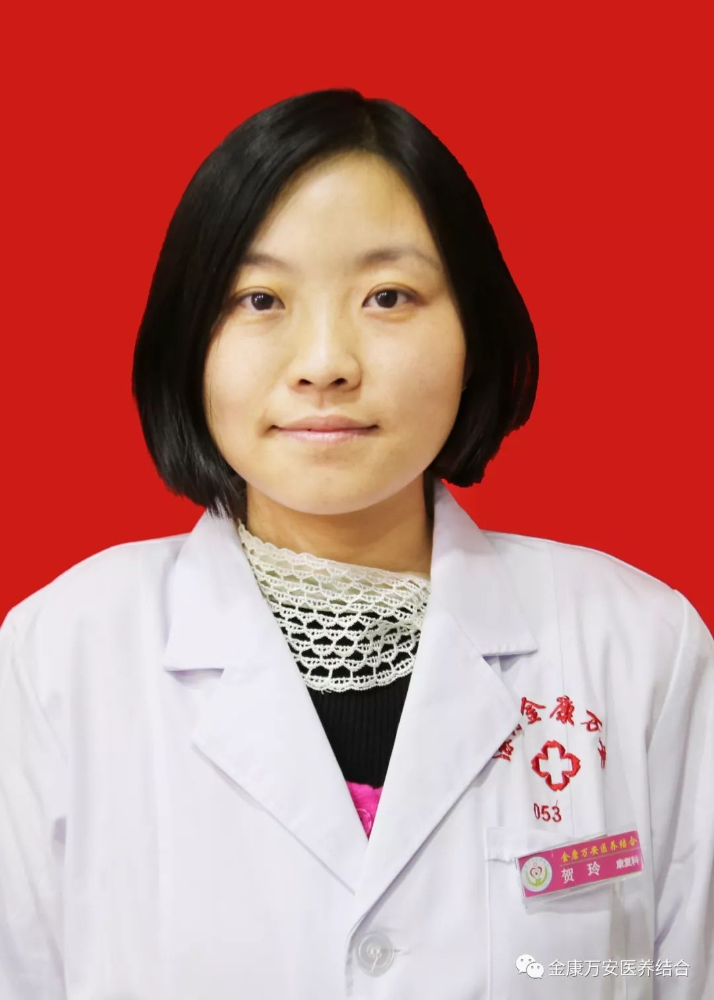
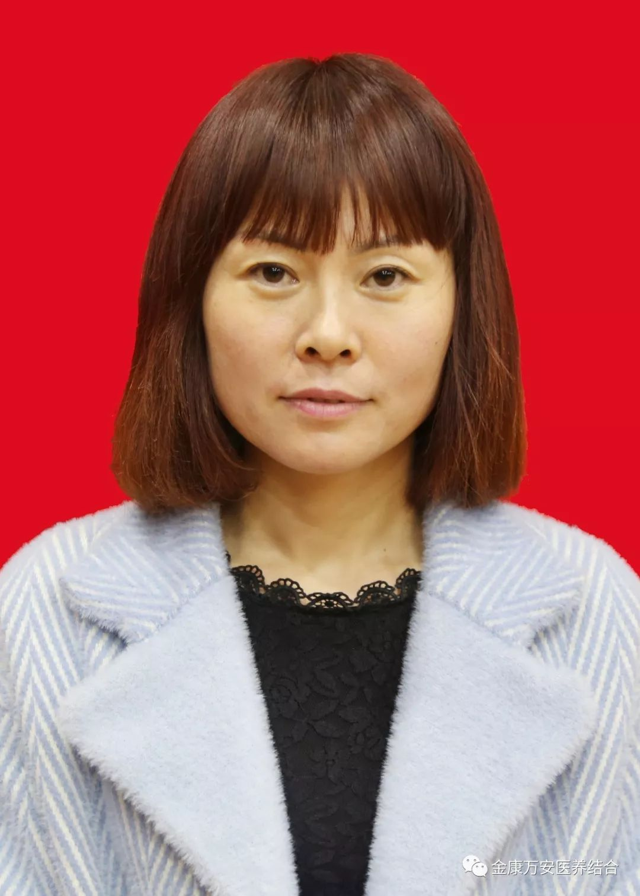

健康需要管理，生命需要维护！——河南金康万安健康管理中心竭诚为您服务
健康管理是指一种对个人或人群的健康危险因素进行检测、分析、评估和干预的全面管理过程。主要有一下几个特点：
1.健康管理是以控制健康危险因素，包括可变危险因素和不可变危险因素。其中改变可变危险因素的主要途径，是在健康管理机构的指导下，通过补充营养素，改变不合理饮食，适当运动，改变不良生活习惯，继而改变肥胖、高血压、高血糖、高血脂、糖尿病等身体异常指标因素，达到身体恢复正常。
2.健康管理主要体现在一、二、三级并举。一级预防，又称病因预防。是在疾病尚未明显发生时针对病因或威胁因素采取措施，降低有害暴露的水平，增强个体对抗有害暴露的能力以预防疾病为主。二级预防，即在疾病林场前期做好早期发现、早期诊断、早期健康管理和治疗，以防止疾病前期的变化，能使疾病在早期发现就介入健康管理和治疗，避免或减少并发症，后遗症，和残疾的发生。三级预防，即治病防残，又称临床预防。三级预防和健康管理可有效促进功能恢复，提高生存质量，延长寿命，降低死亡率。
3.健康管理服务过程为环形运转循环。健康管理为健康监测——健康评估——健康管理干预整个管理服务过程主要是这三个环节不断循环运行，以促进人体健康水平。
个人健康管理
健康管理中心根据个人生活习惯、个人病史、个人健康体检等方面的数据分析，提供健康教育、健康评估、健康促进、健康追寻、健康督导和导医陪诊等专业化的健康管理服务。主要目标群体是：
1.健康人群，热爱健康并且认识到健康管理的重要性，但由于健康管理知识，希望得到科学的、专业的、系统的、个性化的健康教育和指导，并通过定期健康评估和健康调理，保持健康危险处于低风险水平，尽享健康人生。
2.亚健康人群，处于四肢无力、心力交悴、睡眠不好等症状人群。由于从事的行业不同，受社会竞争以及精神负担的压力，自我明白处于亚健康状态，但不知道如何改善，希望通过健康管理，提高自身的工作效率和整体健康水平。
3.携病人群，患有高血压、高血糖、高血脂、糖尿病、心脏病等疾病携带人群，需要经常服药维持，希望通过健康管理，排除危险因素，降低风险水平，延缓风险水平，延缓疾病的过程，提高生命质量。

金康万安健康管理团队（部分）

张莉：女，业务院长，大专学历，注册营养师，人体成分分析师，体重管理师，从事临床营养工作20多年，熟悉营养学的知识，对各类病人的营养治疗和营养支持积累了丰富的经验。尤其是擅长对高血压、高血脂、高尿酸、糖尿病、肥胖的营养指导，通过合理膳食，改变生活习惯，能够远离药物，达到控制血压、控制血糖、控制尿酸、降低血脂，控制体重的目的。
万素华：女，业务院长，全科主治医师，临床营养师、公共营养师、体重管理师。从事临床工作25年，2007年进修于郑州大学公共卫生学临床营养专业，现为河南省临床营养优质服务联盟成员。擅长营养状况评估、慢性疾病及肥胖的饮食治疗和各种疾病治疗膳食的配置。
黄丽芳：女，大专学历，中共党员，心理咨询师，公共营养师，人体成分分析师。从事营养学4年余，根据不同病种制定个性化的饮食调理方案、膳食营养管理和指导。通过合理饮食，适量运动，健康管理，达到健康的生活方式和理想的生活状态。

宣红勋：男，毕业于河南医科大学，结合祖传中医，从医30多年。擅长中西医结合，治疗高血压、糖尿病、肥胖症、高血脂。近几年对健康管理，多有探索，在实践中发现，健康管理比药物治疗更重要，通过合理饮食、饮水、运动提高机体生命力，调整机体生命活动是现代人类维修健康的选择。

贺玲：女，本科学历，高级健康管理师，高级健康保健师，高级经络师。多年来一直从事针灸、经络理疗康复保健工作，2017年年底到郑州黄河医专学院进修“吞咽治疗”“针灸减肥”“SFMA选择性功能动作评估”等康复治疗技术。工作中真诚敬业，积极乐观，具有极强的责任心和服务精神。以其现代化科学的健康管理知识与传统中医康复保健理念相结合，更加科学有效的管理健康。

陈雪娟：女，专科学历，社区医学，健康管理师，公共营养师，人体成分分析师。6年以上工作经验，长期从事养生，理疗工作，规律的、科学的引导健康生活方式，合理饮食。针对肥胖人群、非健康人群和高危人群（糖尿病、高血压、心脑血管等疾病的患者）制定专属性管理方案。